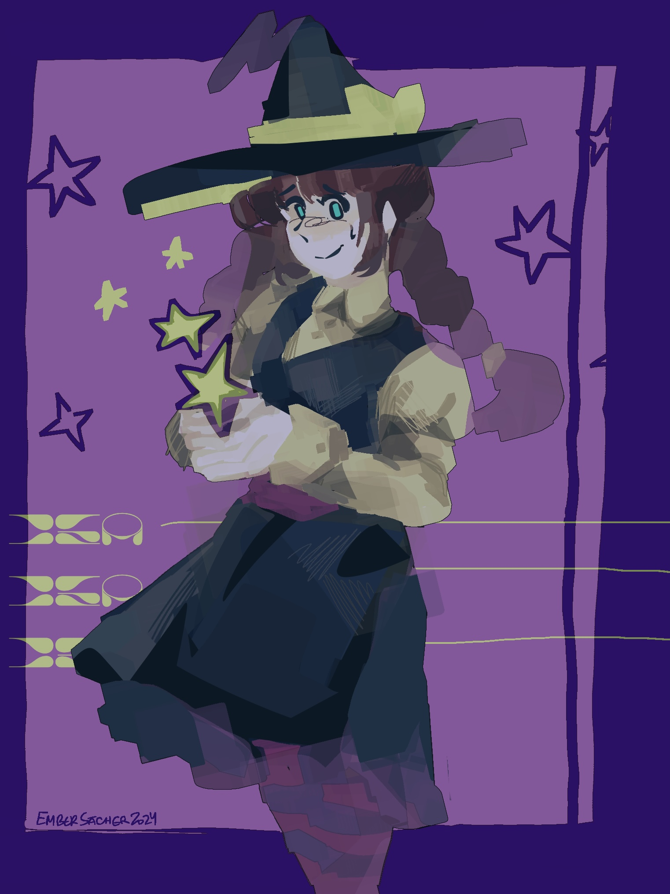
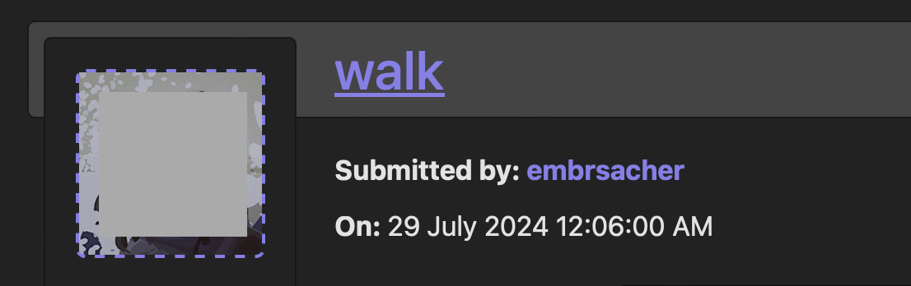
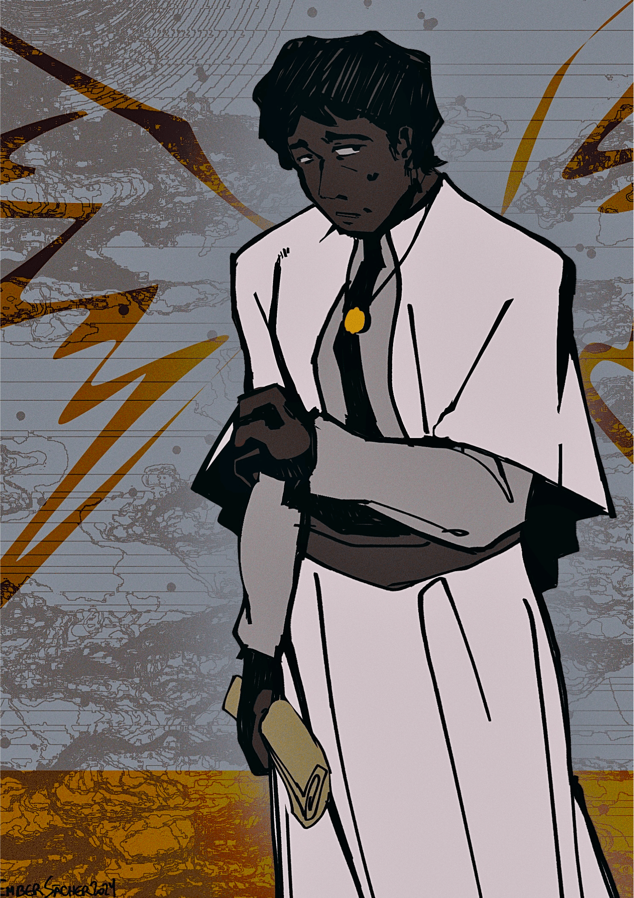
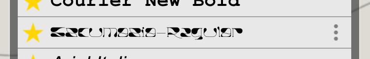

artfight attack compilation 2
once again, credits are listed under each piece. no alt texts on this one, sorry.
what was in my headphones this batch ? -- alone in the darkness - siames ↗
bea by ~Itsqiroma
ohhh this one's my favorite from this year. i looove blotchy scribbly shading but i can never actually pull it off right. i did smtn similar for attack #2 (khojin) but this one just hits the spot

ollie & ruccus by ~KingTutter
the color palette beat my ass on this one

stellaris 5128 & sock by ~jupiterc0m
texture abuse..... i just remembered i could do this
this was the part in the month where i realized how late in the game i was and still havent gotten around to many of my bookmarks 😭 i'd just been revenging for 90% of the event, and in the last week or so of AF i went hard. this and the following entries r home to my favorite works from the month.

antoine & belinda by ~IrishAndGinger305
oh man i love these goobers. i wanted to attack first but homegirl beat me to it. the silly little mailman is dressed in a corset, i'm afraid he is the only one SERVING in this war, the others outta be emberassed. cringe-ass french caption. funny little mail and wishbone stamp. i'm sure i could bullshit up a reason for them.
last panel was a plesant challenge to pull off, it looks much more vibrant un-compressed, im saddened by how much i needed to compress it it urkkk

attack link
saurouz didn't want their charries posted elsewere but allowed a direct link to the art -- so click above to see it!
ohhhh this one's my absolute favorite. i was so frustrated with the art at first but then then they fire back at me with the nicest comments imaginable and then suddenly it's one of my favorites from this season LOLLL. actually perfect and impeccable timing as i'd felt myself falling into artblock ackkkkk do you know how near and dear keymash comments are????? golden, this is what AF is all about man, so many insanely cool users w insanely cool stories to share in inspo, oh man. perpetual motion machine perpetual motion machine per

abera gray by ~Sunset_Lemons
i just really like the character man, all of my character design biases: mild-mannered, monochromatic, long flowy clothes, answers to some kind of devout cause. i woulda loved to give something more rendered. curse the end of the month.

samael & oren by ~FiasKotec
i love killer bean and i love soldier ocs what can i say. sam-i-am, i dont like green eggs and ham

anyhow, thank you strange font for saving my life